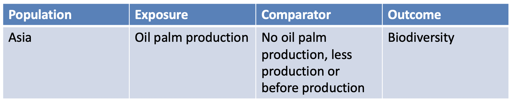

5. Searching for evidence
This session will cover all aspects of setting up, testing and running searches for evidence as part of a systematic review or map. It will cover how to build a comprehensive search string, how to decide which academic resources to search, how to combine searches of different sources of evidence in one clear search strategy, and how to identify and search for grey literature. This session will include a practical exercise involving the development of a search string for bibliographic databases and downloading search results.
Learning objectives:
- To appreciate the main resources and activities that must be searched within a systematic review or map
- To understand the meaning of the following in relation to searching for evidence: synonyms, search terms, search strings (and sub-strings), Boolean operators, databases, platforms, grey literature
- To understand how to build and test a search string, how to perform searches in a database, and how to extract search results from a database
- To understand how to identify and select resources to search for a systematic review and map
- To understand the importance of bibliographic checking and how to perform it
- To understand the importance of detailed record-keeping during searching and know how to do it
To begin, watch the following presentation:
You can find the lecture handouts here.
Next, read the fifth chapter of the guidance from the Collaboration for Environmental Evidence here. We'll revisit sections of the CEE Guidance throughout the course. It focuses on environmental and conservation topics, but is subject agnostic, meaning that it's useful for other disciplines, too. Feel free to focus instead on the Cochrane Guidance if you work with healthcare topics.
Practical exercise
In this practical exercise, take some time to formulate a Boolean search string for the following question: What are the effects of oil palm production on biodiversity in Asia?
As explained in the presentation, perhaps the best way to approach building a search string is to assemble a list of synonyms (terms that share the same meaning) for each of the question's key elements:
However, remember that we rarely search for comparator terms, because they are not often explicitly stated in titles and abstracts.
So then, spend some time building a list of synonyms for the population, exposure and outcome for the question above. When you've finished, try to combine those terms into a Boolean search string using relevant operators (e.g. 'AND', 'OR', '(', ')', *) adapted for a Web of Science Core Collections search. See here for help on what this means.
The authors of the review (available here) came up with the following search string:
("Oil palm" OR "Soybean" OR "Jatropha") AND (Tropic*) AND ("Species diversity" OR "Species richness" OR "Species abundance" OR "Species similarity" OR "Species composition" OR "Community composition" OR "Deforestation" OR "Land use change" OR "Fragmentation" OR "Habitat loss" OR "Connectivity" OR "Functional diversity" OR "Ecosystem" OR "Displacement")
What do you think about their final string? How does your string compare with theirs? Can you find any problems with the authors search string?
Developing a search string takes considerable time and expertise, and requires input from a range of different experts. Having said that, it's not a perfect science: authors write their titles and abstracts in a huge variety of ways, and using a complex range of implicit descriptions that are not always easy to predict. As systematic reviewers, we can only try our best to think of all possible ways to describe a topic, and make use of multiple search techniques to reduce the risk of missing something or introducing bias.
Once all of the evidence has been searched for, it needs to be collated, duplicates removed, and detailed records kept of the fate of each record throughout the rest of the review process. Reviewers typically make use of specialist software for this task, and we'll explore this more in the next module.
Move to the next module!